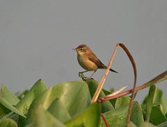
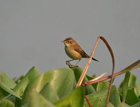

| Paddyfield Warbler | |
|---|---|
|  | |
| Conservation status | |
| Binomial name | |
| Acrocephalus agricola (Jerdon, 1845) |
| Paddyfield Warbler | |
|---|---|
|  | |
| Conservation status | |
| Binomial name | |
| Acrocephalus agricola (Jerdon, 1845) |
The Paddyfield Warbler, Acrocephalus agricola, is a species of marsh-warbler (family Acrocephalidae). It was formerly included in the "Old World warbler" assemblage. The Manchurian Reed-warbler (A. tangorum) was (and sometimes still is) included in A. agricola as a subspecies.
It breeds in temperate central Asia. It is migratory, wintering in Pakistan and India. It is a rare vagrant to western Europe. This passerine bird is a species found in low vegetation such as long grass, reeds and rice. 4-5 eggs are laid in a nest in grass.
At 13 centimetres (5.1 in) long with a wingspan of 15–17.5 centimetres (5.9–6.9 in), Paddyfield is close in size to the Reed Warbler but with shorter bill and wingspan. The adult has an unstreaked pale brown back and buff underparts, with a warm brown rump. There is a clearer whitish supercilium and the bill is short and pointed. The sexes are identical, as with most warblers, but young birds are richer buff below. Like most warblers, it is insectivorous.
The song is fast and similar to Marsh Warbler, with much mimicry and typically acrocephaline whistles added. Its song is weaker and more rhythmic than that of its relative.

_in_Kolkata_Im_IMG_0496.jpg){kind=link}